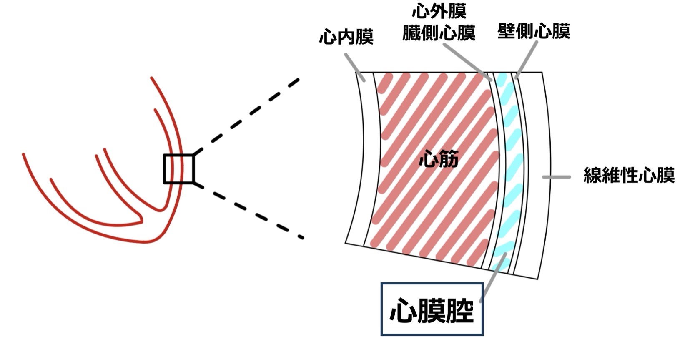
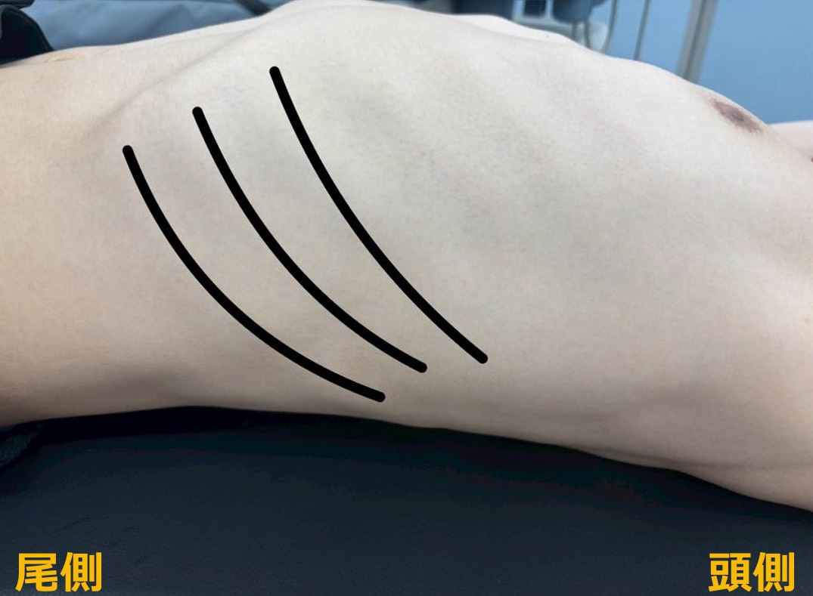
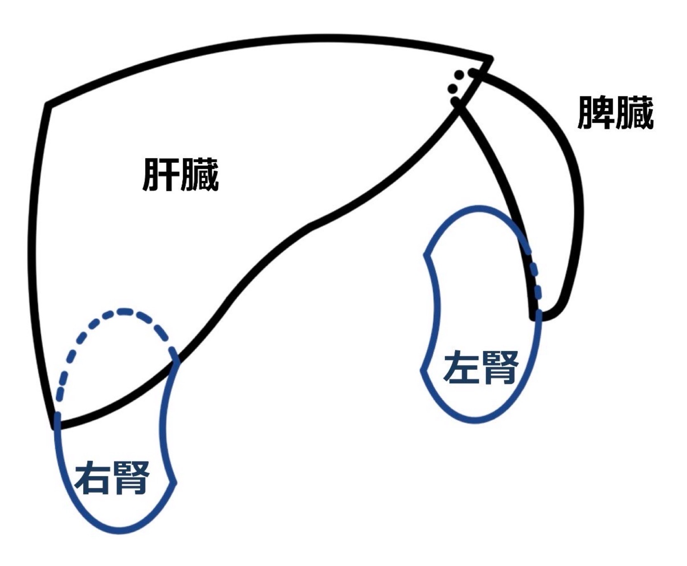

🤖 ソノボくん
キャプテン、惑星アナトミアへようこそ！🌿 ここではFASTに必要な解剖を学ぶ。難しくないから安心して！最低限に絞ったから💪
このミッションをクリアすると宇宙船アップグレード 🛸 を獲得できる！
① 心膜（心臓を包む袋）
② 胸骨と剣状突起（プローブを当てる目印）
③ 肋骨の走行（肋間からプローブを入れる）
④ 肝臓・脾臓・腎臓とモリソン窩
全部で4テーマ！途中でクイズあり。惑星アナトミアを制覇しよう！
CHAPTER 01 — 心膜（しんまく）

🤖 ソノボくん
まず「心膜」から！詳しいことは抜きにして、心膜腔の存在を知ろう

心膜の構造図
胸骨の後方・胸腔中央やや左に位置
壁側心膜と臓側心膜の間 ＝ 心膜腔
正常では少量（20〜50ml）の液体だけ
正常では少量（20〜50ml）の液体だけ
あくまでイメージだけど、心臓をみかん🍊に例えると、実と皮の間に液体が貯まっているようなイメージ

🤖 ソノボくん
ここ超大事！心膜腔に液体が溜まると「心タンポナーデ」という超危険な状態になるんだ😱
💧 正常
心膜腔には生理的に 20〜50 mL の心膜液が貯留している
【心タンポナーデ】
大量の心膜液が貯まり、心臓が圧迫されて血液を送り出せなくなる緊急状態！
エコーでは液体が黒い帯として確認できる！

🤖 ソノボくん
心膜の知識、ちゃんと頭に入ったかな？クイズタイム！✏️ 惑星アナトミアの試練だ！
Q1心膜腔について正しいものはどれか？
Q2心タンポナーデの説明として正しいものはどれか？
CHAPTER 02 — 胸骨と剣状突起
🤖 ソノボくん
次はプローブを当てる「目印」を覚えよう！位置を知らないと始まらないから大事だよ🦴
胸骨：胸の正中を走る縦長の平たい骨。肋骨が左右からつながっている
剣状突起：胸骨の一番下にある突起。体表から触って確認できる！自分の体を触って確認してみよう
剣状突起のすぐ下 ＝ 心窩部（みぞおち）
🤖 ソノボくん
肋骨って意外と斜めに走ってるんだよ！これを知らないとプローブが入らないから重要🎯

肋骨の走行
肋骨は思っているより斜めに走っている！背部にいくほど縦に近づく。自分の体を触って確認してみよう
肋骨と肋骨の間（肋間）からプローブを入れる！ここを通らないと臓器が見えない
🤖 ソノボくん
解説はバッチリ！でも知識は体で覚えてこそ本物だよ🙌 次に進む前に確認させて！
解剖を「見る」だけじゃなく、実際に触れることで空間的な理解が格段に深まる。プローブ操作にも直結するよ！
🔽 剣状突起を触った
胸骨の一番下、みぞおちの上あたり
📐 肋骨の走行を触って確かめた
斜めに走っているのを指でなぞった
背中に近づくほど、カーブが急（縦）になるのが分かったかな？
背中に近づくほど、カーブが急（縦）になるのが分かったかな？
⏳
まだ触っていない場合は、今すぐ！30秒もあればOK。画面を置いて自分の胸に手を当ててみよう。
🤖 ソノボくん
胸骨・肋骨クイズだよ！正解できるかな？🦴 惑星アナトミアの守護者が試している！
Q3剣状突起について正しいものはどれか？
Q4腹部エコー（FAST）で肋骨の走行を把握することが重要な理由として、最も正しいものはどれか？
CHAPTER 03 — 主要臓器の位置
🤖 ソノボくん
いよいよFASTの主役臓器！肝臓・脾臓・腎臓の位置関係を頭に入れよう🫁

肝臓・脾臓・腎臓の位置関係
右腎は左腎より約1椎体分低い位置にある（肝臓に押し下げられるため）
モリソン窩（肝腎窩）＝ 肝臓と右腎の間のわずかな隙間。腹腔内出血で腹水が最初に溜まりやすい最重要ポイント！
エコーでは液体が黒く（無エコー域）見える。肝臓と腎臓の間に黒い帯が現れたらFAST陽性！
📷 実際のエコー画像

モリソン窩（肝腎窩）― 肝臓と右腎の間に黒い液体が見えたらFAST陽性
🤖 ソノボくん
臓器クイズ！ここまでの解剖知識を試そう🎯 惑星アナトミアの核心に迫る！
Q5モリソン窩とはどこか？
Q6右腎と左腎の位置関係として正しいものはどれか？
🤖 ソノボくん
最後の総合クイズ！全問正解で宇宙船アップグレードを解放できるぞ！💪
Q7次のうち、腹部の中で最も左側に位置する臓器はどれか？
Q8最も典型的に「無エコー（黒い領域）」を示すものはどれか？
PLANET ANATOMIA — MISSION COMPLETE
⭐⭐⭐
惑星アナトミア 制覇！
FASTの解剖知識をマスターした！
次の惑星では実際に機器を操作するぞ🔭
SHIP UPGRADE UNLOCKED
宇宙船アップグレード完了！
解剖知識チップ
FAST解剖データをナビに統合
NEW
高機能エンジン
実技訓練向けのメインシステム出力準備完了
UP
シールド強化
次惑星のプローブ操作に対応
UP
🎯 クイズスコア
－